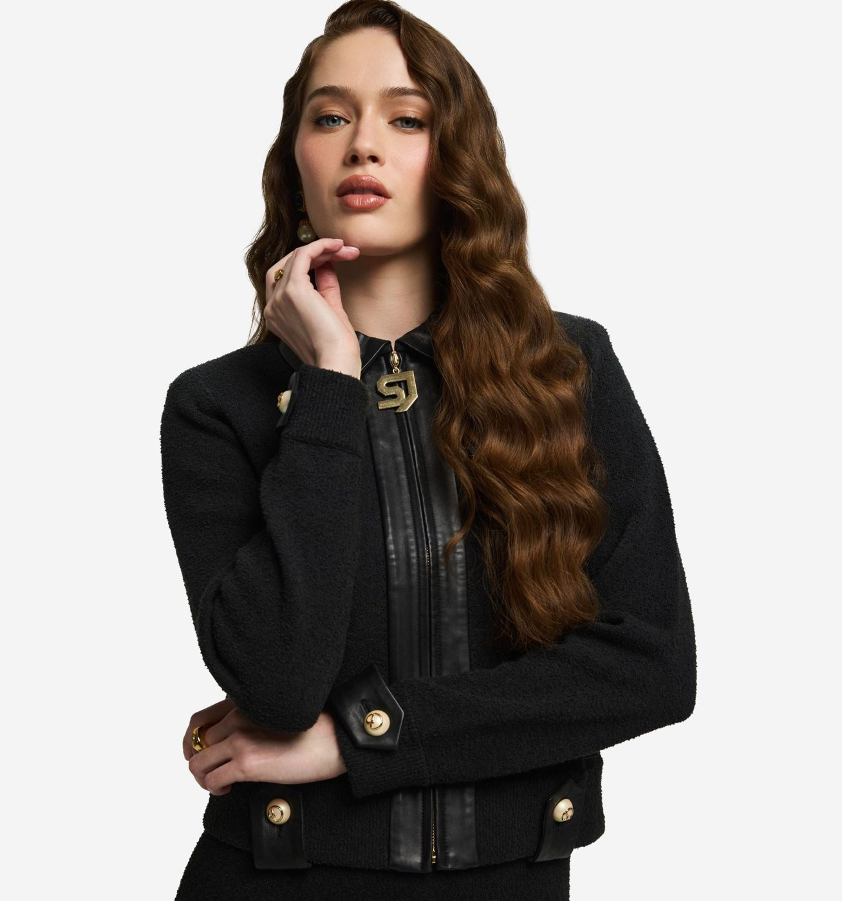
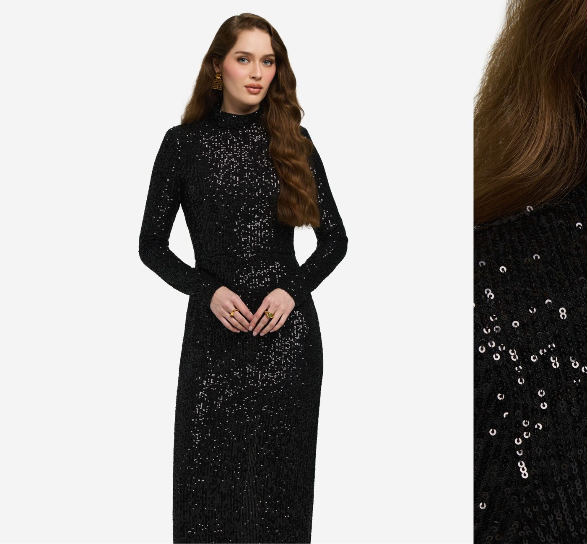
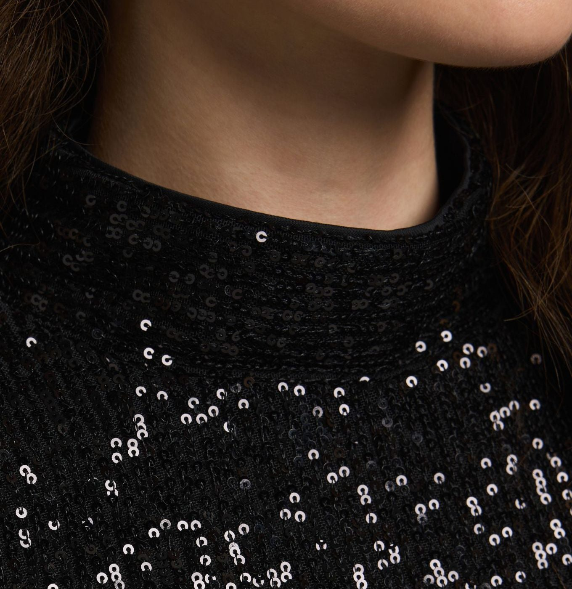
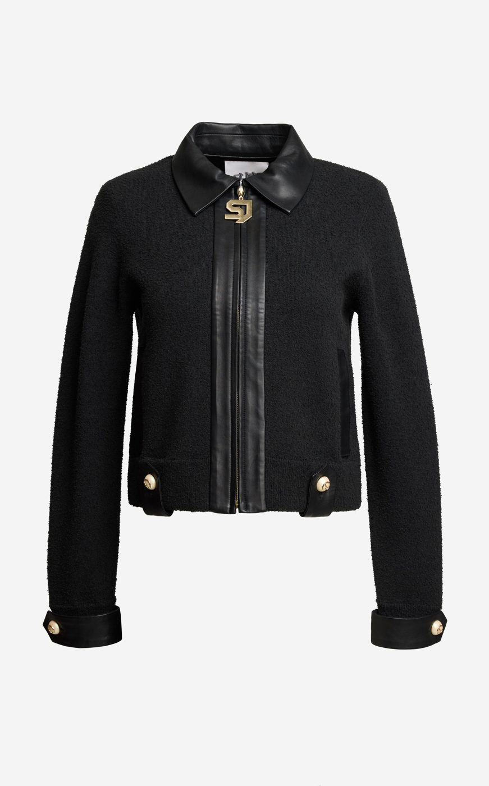
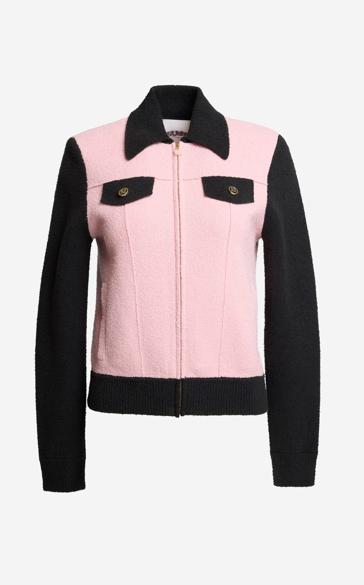
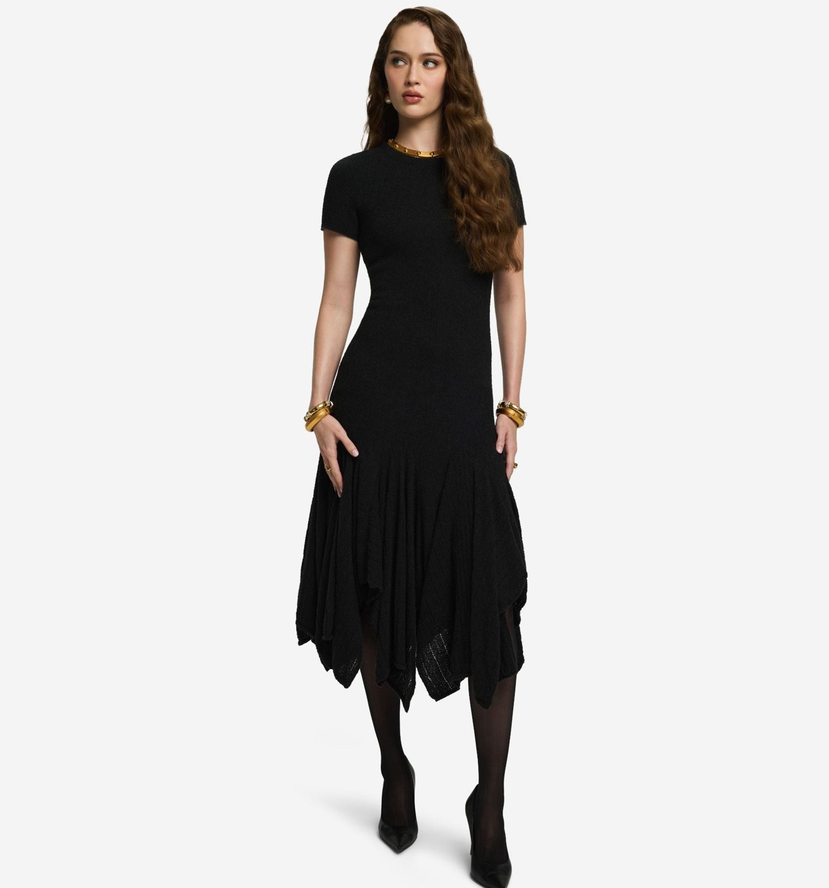

St. John Knits
Company study · 2026-11-16
Pale studio, strong color, exact tailoring. Red, black and one soft pink are set on near-white ground; hardware and sequins give small flashes of shine. The positioning is luxury knitwear for a working woman: polished, confident and ceremonial, not trend-led.
 (01)
(01)


(02)

(03)

(04)

(05)

(06)

(07)Palette · measured from images
#F4F4F4#100E0E#B60B0F#CF1A36#F6D0D3Visual themes
- Tailored knit
- Key motifs: knit jackets with a leather collar or trim, structured shoulders. Sub motifs: contrast piping, welt pockets, cropped lengths.
- Hardware and embellishment
- Key motifs: gold buttons and clasps, sequins, paillettes. Sub motifs: brooch-like buttons, jet-black beading.
- Strong color on white
- Key motifs: single saturated garment against a pale ground (red, pink). Sub motifs: black as the base; color-blocked collar and pocket flaps.
- Evening line
- Key motifs: long black column dresses with sequin fields. Sub motifs: sheer sleeves, fluid skirts, asymmetric hems.
Hero material
St. Its signature Santana knit is reported as a wool-rayon blend (about 80% wool, 20% rayon) with a special twist that resists wrinkling (https://www.fineclothing.com/the-fine-line/st-john-knits-glossary.html, third party, retrieved 2026-11-16).
The image of the brand is a fine, dense, smooth jersey in solid color, with sequin or metallic fields as the only surface event.
Visual elements
- Photography
- Pale seamless studio ground, even soft light, model looking off camera with a hand at the face or collar; ghost-mannequin product shots on light gray.
- Type and graphics
- Black wordmark logo (the logo file is named as a 1962 version); little other graphic.
- Layout habits
- Full-width hero, then two-up diptychs of one look and its detail; 2:3 product tiles.
- Detail
- Gold domed buttons, leather collar tabs, tonal piping, fine sequin fields.
Visual story
A large hero look, a diptych of one look with a detail close-up, then product tiles in rows by color. Our Story gives the founding in one paragraph. Look first, then the detail that proves the craft.
The red hero acts as the single color signal for the season.
Notable products
- Knit jackets with leather collar
- Carry the tailored-knit idea.
- Sequin knit evening dresses
- Show the embellishment side.
- Color-block knit zip jacket
- Shows the softer color play (pink and black).
Method and limits
- Palette basis
- Board images (01), (02), (05) to (07), a bright red banner image and two product images (red top, pink skirt); six clusters kept, the hair-brown cluster dropped as non-garment
- Limits
- Home page read once on 2026-11-16; banners rotate. Source file names for pink jacket (06) could be K61T063 or K71T073.
Credits and licenses
(01) Model in red knit cardigan with gold buttons, home page hero. St. John Knits. Brand image, study use. source
(02) Model in black knit jacket with leather trim and gold hardware. St. John Knits. Brand image, study use. source
(03) Model in black sequin knit dress with sheer sleeves (crop of the home page diptych). St. John Knits. Brand image, study use. source
(04) Close-up crop of sequin-embellished knit at the collar, cropped from the home page diptych. St. John Knits. Brand image, study use. source
(05) Black knit jacket with leather collar and gold buttons, product image. St. John Knits. Brand image, study use. source
(06) Pink and black knit zip jacket, product image. St. John Knits. Brand image, study use. source
(07) Black knit dress with asymmetric hem, home page. St. John Knits. Brand image, study use. source